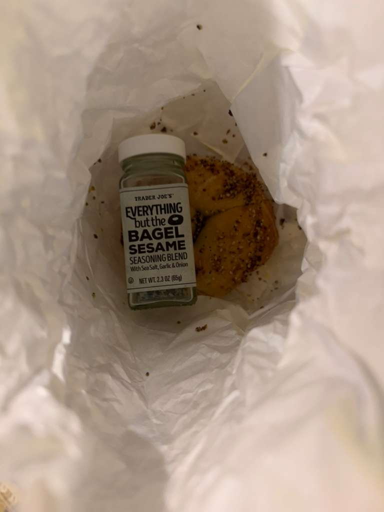

Where People Go
New York City has many well-known bagel shops that people visit for fresh bagels and classic sandwiches. Some shops are famous for traditional bagels, while others are known for creative flavors or large breakfast sandwiches. Bagel shops are part of neighborhood life in NYC, and many people have strong opinions about which place is the best. That local loyalty is part of what makes NYC bagel culture unique.
